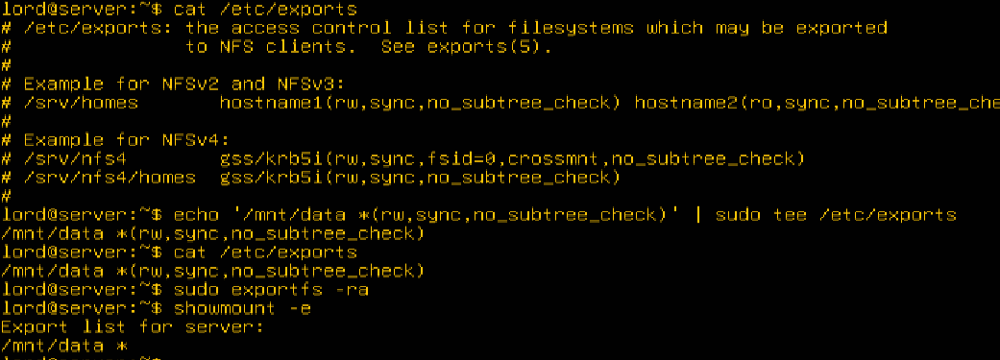
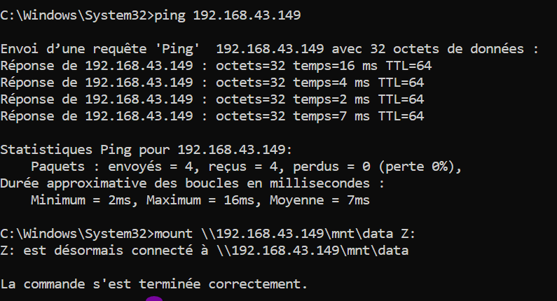
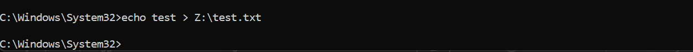
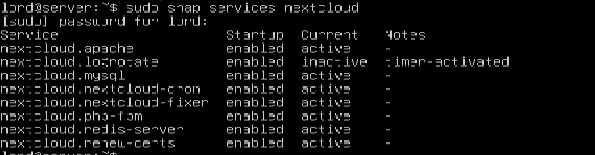
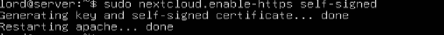
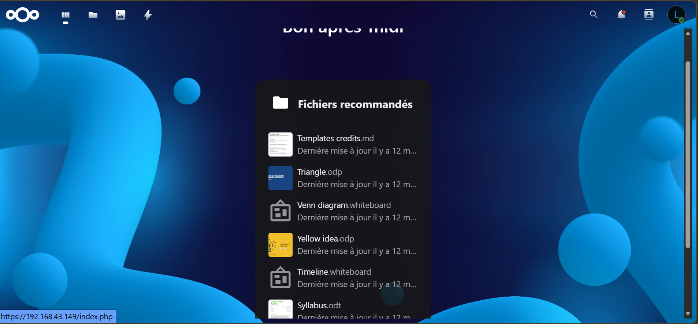
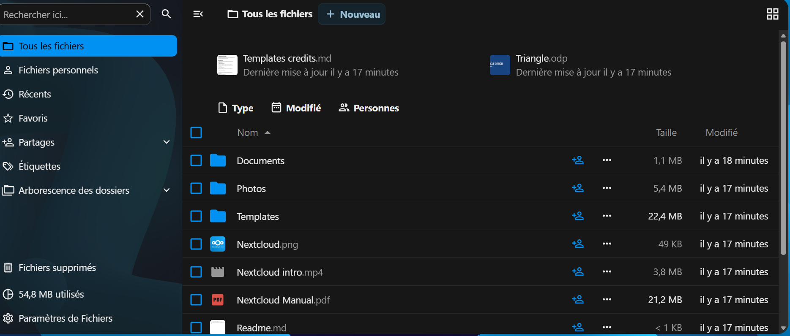
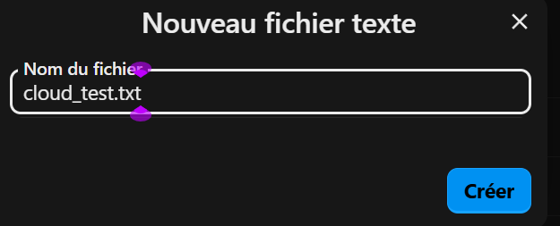
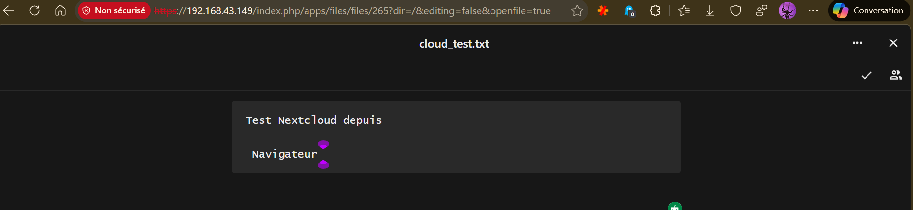
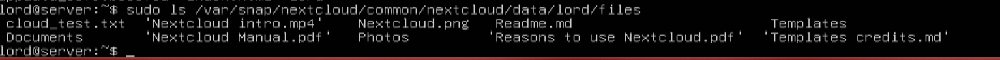

Virtualisation de Stockage
sur Ubuntu Server avec Cockpit
LVM · NFS · Nextcloud · Démonstration complète
Membre du groupe
- Introduction
- Prérequis et préparation
- 1. Ajout de disque dans VirtualBox
- 2. Vérification des disques (Cockpit + commande)
- Initialisation LVM
- Formatage et montage du LV
- Montage persistant
- Extension du LV
- Partage via NFS
- Démonstration accès NFS depuis Windows
- Accès Cloud avec Nextcloud
- Démonstration Nextcloud
Introduction
Ce rapport présente étape par étape la mise en place d'une virtualisation de stockage sur Ubuntu Server en utilisant LVM (Logical Volume Manager) et l'interface web Cockpit. Chaque étape est accompagnée des commandes utilisées, des objectifs pédagogiques et des captures d'écran.
Prérequis et préparation
- Réseau : La machine virtuelle est configurée en mode accès par pont et Cockpit est accessible via
http://IP:9090. - Connexion Cockpit : Connexion avec l'utilisateur (exemple : lord).
- Disque supplémentaire : Ajout d'un second disque virtuel (20–50 Go) dans VirtualBox avant le démarrage de la VM.
1 Ajout de disque dans VirtualBox
VM éteinte : Paramètres → Stockage → Contrôleur SATA → Ajouter un disque dur → Créer → VDI → Dynamique → Taille (ex. 20 Go).

2 Vérification des disques dans Ubuntu
Objectif : Identifier le nouveau disque (souvent /dev/sdb).
2.1 Interface web Cockpit
On observe les disques ajoutés sdb et sdc :

2.2 Commande

Initialisation LVM
Objectif : Transformer le disque en PV, l'ajouter au VG et créer un LV.


Formatage et montage du LV
Objectif : Préparer le LV pour l'utilisation et le monter.

Note : Cette erreur n'empêche pas le montage. Elle indique simplement que le point de montage n'est pas défini dans /etc/fstab, donc non persistant après redémarrage.
Montage persistant
Objectif : Assurer que le montage persiste après redémarrage.


Extension du LV
Objectif : Démontrer la flexibilité de LVM en agrandissant un volume logique en ligne.

On observe qu'on est passé de 10G à 15G

Partage via NFS
Objectif : Partager le stockage sur le réseau.

Cockpit - Services NFS actifs

Journaux de démarrage du service

Démonstration de l'accès NFS depuis une machine Windows
Objectif : Montrer que le volume logique data_lv (sur /mnt/data) créé avec LVM et partagé via NFS est accessible depuis une machine Windows physique, prouvant la virtualisation et le partage réseau.
1 Vérifier le partage côté serveur Ubuntu

2 Activer le client NFS sur Windows
- Ouvrir Panneau de configuration → Programmes → Activer ou désactiver des fonctionnalités Windows.
- Cocher "Services pour NFS" (Client NFS).
- Redémarrer si nécessaire.

3 Monter le partage NFS sur Windows
Quelques vérifications côté serveur :

Commande (PowerShell ou CMD en admin) :
(Remplacer l'IP par celle de ton serveur Ubuntu)

4 Vérification du partage NFS
Objectif
Prouver que le partage NFS est fonctionnel en créant un fichier test depuis Windows (lecteur Z:) et en vérifiant sa présence sur le serveur Ubuntu dans /mnt/data.
Explication
Le lecteur Z: ne s'affiche pas dans l'Explorateur Windows car le système de fichiers utilisé côté Ubuntu est ext4, un format que Windows ne sait pas interpréter directement. Cependant, grâce à NFS, Windows peut tout de même écrire et lire dans ce répertoire via le réseau. La preuve se fait par la commande echo sous Windows et la vérification avec ls sous Ubuntu.
1. Côté Windows

2. Côté Ubuntu
Conclusion : Même si le lecteur Z: n'est pas visible dans l'Explorateur Windows, la démonstration est réussie : Windows écrit bien dans le partage NFS, Ubuntu lit le fichier créé. Cela prouve l'interopérabilité entre systèmes différents grâce à NFS et valide la virtualisation du stockage.
Accès Cloud avec Nextcloud (Disque sdb)
Objectif : Démontrer que le stockage virtualisé sur sdb peut être intégré dans une solution cloud (Nextcloud) et accessible via un navigateur web. Cela prouve que le même espace de stockage est utilisable en local, en réseau (NFS), et en mode cloud.
7.1 Installation de Nextcloud
7.2 Configuration initiale de Nextcloud (Snap)
1. Vérifier que le service est actif

2. Créer l'utilisateur admin
3. Autoriser l'accès web

7.3 Accéder à l'interface Nextcloud
Depuis ton navigateur Windows :

Démonstration Nextcloud
Objectif : Valider l'accès cloud au stockage virtualisé en créant un fichier via l'interface web de Nextcloud et en vérifiant sa présence côté serveur Ubuntu.
1 Création d'un fichier test dans Nextcloud
- Ouvrir l'interface Nextcloud dans le navigateur :
https://192.168.43.149/ - Cliquer sur le bouton "+" en haut ou dans le dossier "Fichiers"

- Sélectionner "Nouveau fichier texte"
- Nommer le fichier : cloud_test.txt

- Écrire une ligne de contenu, par exemple : "Test Nextcloud depuis Navigateur"

- Enregistrer le fichier.
2 Vérification côté Ubuntu
Dans le terminal Ubuntu, exécuter la commande suivante :

Le fichier cloud_test.txt doit apparaître dans ce répertoire.
Remarque : Si l'on souhaite que le fichier apparaisse dans /mnt/data, il faut configurer Nextcloud pour utiliser ce dossier comme répertoire de données. Pour cette démonstration, le dossier par défaut est suffisant.
3 Conclusion
Cette étape confirme que le stockage virtualisé est accessible via une interface cloud. L'utilisateur peut créer et consulter des fichiers depuis un navigateur, prouvant l'interopérabilité entre le serveur Ubuntu et l'environnement web. La démonstration est ainsi complète et fonctionnelle.